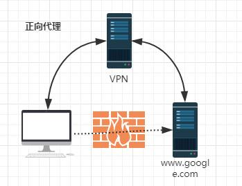
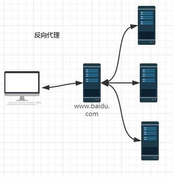

nginx 相关
一、介绍
正向代理

反向代理

由于防火墙的原因，不能直接访问谷歌，那么可以借助VPN来实现，这就是一个简单的正向代理的例子。可以发现，正向代理“代理”的是客户端，而且客户端是知道目标的，而目标是不知道客户端是通过VPN访问的。
当我们在外网访问百度的时候，其实会进行一个转发，代理到内网去，这就是所谓的反向代理，即反向代理“代理”的是服务器端，而且这一个过程对于客户端而言是透明的。
1、启动ngnx
docker run -d -p 192.168.21.32:80:80 --name nginx nginx
2、下面四种情况分别用http://192.168.1.4/proxy/test.html 进行访问。
第一种：
location /proxy/ { proxy_pass http://127.0.0.1:81/; } 会被代理到http://127.0.0.1:81/test.html 这个url第二种(相对于第一种，最后少一个 /)
location /proxy/ { proxy_pass http://127.0.0.1:81; } 会被代理到http://127.0.0.1:81/proxy/test.html 这个url第三种：
location /proxy/ { proxy_pass http://127.0.0.1:81/ftlynx/; } 会被代理到http://127.0.0.1:81/ftlynx/test.html 这个url。第四种情况(相对于第三种，最后少一个 / )：
location /proxy/ { proxy_pass http://127.0.0.1:81/ftlynx; } 会被代理到http://127.0.0.1:81/ftlynxtest.html 这个url
3、配置实例nginx
server {
listen 80;
server_name 192.168.21.33;
#access_log logs/quancha.access.log main;
#error_log logs/quancha.error.log;
#root html;
#index index.html index.htm index.php;
## send request back to apache ##
location / {
proxy_pass http://192.168.21.100:80;
#Proxy Settings
proxy_redirect off;
proxy_set_header Host $host;
proxy_set_header X-Real-IP $remote_addr;
proxy_set_header X-Forwarded-For $proxy_add_x_forwarded_for;
proxy_next_upstream error timeout invalid_header http_500 http_502 http_503 http_504;
proxy_max_temp_file_size 0;
proxy_connect_timeout 90;
proxy_send_timeout 90;
proxy_read_timeout 90;
proxy_buffer_size 4k;
proxy_buffers 4 32k;
proxy_busy_buffers_size 64k;
proxy_temp_file_write_size 64k;
}
}
server
{
listen 80;
server_name xxx123.tk;
location / {
proxy_redirect off;
proxy_set_header Host $host;
proxy_set_header X-Real-IP $remote_addr;
proxy_set_header X-Forwarded-For $proxy_add_x_forwarded_for;
proxy_pass http://192.168.10.38:3000;
}
access_log logs/xxx123.tk_access.log;
}
server
{
listen 80;
server_name xxx456.tk;
location / {
proxy_redirect off;
proxy_set_header Host $host;
proxy_set_header X-Real-IP $remote_addr;
proxy_set_header X-Forwarded-For $proxy_add_x_forwarded_for;
proxy_pass http://192.168.10.40:80;
}
access_log logs/xxx456.tk_access.log;
}
二、使用
1、常用配置
autoindex on;# 显示目录
autoindex_exact_size on;# 显示文件大小
autoindex_localtime on;# 显示文件时间